234 charts, and when to use each
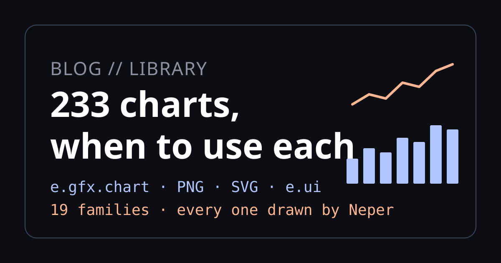
Neper's chart library now draws 234 kinds of chart, from a bar chart to a Laney u′ control chart, a Kaplan-Meier curve, a Sankey diagram and a Nyquist plot. That is too many to pick from by scrolling. This post is the guide we wanted ourselves: each chart, the question it answers, and when to reach for something else instead.
Every picture here was rendered by Neper itself, by examples/chart_gallery.e through the CPU scene renderer and PNG encoder, and each has an SVG twin streamed from the same layout. Behind the gallery, 156 test programs check the geometry, statistics and refusal paths on Windows and on Linux.
How the library is built
A chart in e.gfx.chart is a layout, not a picture. You hand it borrowed columns of numbers and caller-owned storage; it fills that storage with renderer-neutral marks (points, segments, rectangles, polygons, labels) and never allocates on its own. The same marks then go wherever you need them:
e.gfx.chart.scenedraws them into a scene for the CPU or GPU renderer, and from there into a PNG;e.gfx.chart.svgstreams them as SVG, with gradients, embedded fonts and accessible titles;e.gfx.chart.widgetputs them in ane.uicanvas, laid out again at whatever size the window gives it;e.gfx.chart.pdfwrites them as a vector PDF page, with Helvetica text and nothing embedded;e.gfx.chart.localewrites tick labels in the reader's number and date conventions.
Here is a whole program: six bars, the library's accessible palette, a colour-blindness check of that palette, and an SVG file. We compiled and ran it on Windows and on Linux, and both printed exactly this.
use e.fs
use e.gfx.chart
use e.gfx.chart.svg as chart_svg
use e.gfx.geometry
use e.gfx.paint
use e.io
use e.mem
fn main(a: *mem.Arena, args: []str) -> err {
// Borrowed data in, caller-owned marks out: nothing is allocated for the geometry.
let quarter = [6]f32{ 1.0, 2.0, 3.0, 4.0, 5.0, 6.0 }
let revenue = [6]f32{ 3.1, 3.6, 4.4, 4.0, 5.2, 5.9 }
var bars: [6]geometry.Rect = zero
let spec = chart.spec(.Bar, geometry.rect(40.0, 20.0, 300.0, 180.0), quarter[..], revenue[..])
let marks = try chart.layout(&spec, zero, zero, bars[..])
let last = marks.bars[5usize]
try io.printf["{} bars; the last is {} px tall at x = {}\n"](marks.bars.len, last.height, last.x)
// Six series colours that clear 4.5:1 on white, and how close the nearest
// two come for a viewer with deuteranopia.
var palette_storage: [6]paint.Color = zero
let palette = try chart.accessible_palette(paint.rgba(1.0, 1.0, 1.0, 1.0), palette_storage[..])
let typical = try chart.palette_separation(palette, .Typical, 1.0)
let deutan = try chart.palette_separation(palette, .Deutan, 1.0)
try io.printf["closest pair, typical vision: {} and {}, CIEDE2000 {}\n"](typical.first, typical.second, typical.difference)
try io.printf["closest pair, deuteranopia: {} and {}, CIEDE2000 {}\n"](deutan.first, deutan.second, deutan.difference)
// The same marks stream to SVG (or to the CPU scene for a PNG).
let (state, unused, writer_error) = io.memory_writer(a, 0usize)
if writer_error != ok { ret writer_error }
var held = state
var writer = io.writer(mem.cast[*void](&held), io.memory_write)
try chart_svg.begin(&writer, 360.0, 220.0, "Revenue", "Quarterly revenue, six quarters")
try chart_svg.append(&writer, &marks, palette[0usize])
try chart_svg.finish(&writer)
let svg = io.memory_bytes(&held)
try fs.write_file(a, "revenue.svg", svg)
try io.printf["wrote revenue.svg: {} bytes\n"](svg.len)
ret ok
}6 bars; the last is 180 px tall at x = 295
closest pair, typical vision: 1 and 5, CIEDE2000 10.082577076760705
closest pair, deuteranopia: 0 and 3, CIEDE2000 1.219605253081527
wrote revenue.svg: 836 bytesThe last two lines carry a real lesson. The palette keeps every series colour at 4.5:1 contrast against white, and for typical vision its closest pair is still clearly different. For a reader with deuteranopia, though, series 0 (blue) and 3 (purple) are barely distinguishable. Contrast is not colour-blind safety, which is why the previews label series directly instead of relying on a colour legend.
How fast is it?
We timed one realistic chart in Neper and in matplotlib: a 1,000-point line, 200 square markers, a y grid with tick labels and a title at 360×240 pixels, built from the same data. Each pass draws 200 charts and writes them to memory as SVG and as PNG. matplotlib uses its Agg backend and a new figure per chart, as a reporting script would, and keeps SVG text as text, as Neper does. The times are medians of nine runs on one Windows laptop (Intel Core i5-12500H, Python 3.12.10, matplotlib 3.9.4).
| Per chart | Neper | matplotlib | Faster |
|---|---|---|---|
| SVG | 2.62 ms | 16.02 ms | Neper, 6.1× |
| PNG | 20.28 ms | 17.68 ms | matplotlib, 1.15× |
| Layout only | 0.16 ms | – | |
| Rasterize only, no encoding | 2.00 ms | – | |
| SVG / PNG file size | 62.0 / 14.0 KB | 44.4 / 11.2 KB | |
| Whole run, both passes | 5.0 s | 7.6 s | matplotlib import: 0.55 s |
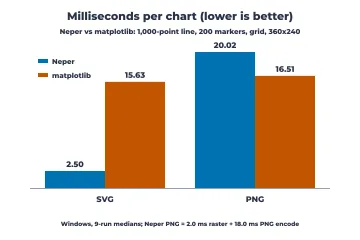
We report both results, because one of them is a loss.
- SVG is 6.1× faster. This is where the design pays off: borrowed columns are laid out into caller-owned storage in 0.16 ms and streamed straight to the writer, with no figure object model to build and tear down for every chart.
- PNG is 15% slower. The renderer is not the problem: it rasterizes a chart in 2.0 ms. The other 18 ms is the PNG encoder's deflate, the next thing we will make faster. Neper's PNGs are also about 25% larger.
- Neper's SVG files are larger (62 KB against 44 KB) because they write every coordinate at full float precision, where matplotlib rounds.
The same Neper program on Linux (WSL) runs within a few percent of these times and writes byte-identical files. Not measured: ggplot2, base R graphics and lattice, which need an R installation this machine does not have, and matplotlib on Linux. The harness is in benchmarks/charts: python benchmarks/charts/run.py <neper-self> 9 builds the Neper side, runs both nine times and writes the medians to results/. Single runs on this shared machine varied by up to half, which is why the table uses medians.
Start from the question
Most bad charts are good charts answering the wrong question. Decide what you want the reader to see, then pick from the matching family:
| If the question is… | Start with | Family |
|---|---|---|
| How much, and which is biggest? | Bar, lollipop, dot | Comparing amounts and ranks |
| What is it made of? | Stacked bar, treemap, waffle | Parts of a whole |
| How did it change? | Line, step, area | Change over time |
| What does the data look like? | Histogram, ECDF, box, violin | Distributions |
| Do two things move together? | Scatter, regression fit, hexbin | Relationships between variables |
| Are two categories associated? | Mosaic, fourfold, cross-tab | Categories, tables and sets |
| Is my model any good? | ROC, calibration, decision curve | Classifiers and predictive models |
| Is my regression trustworthy? | Residuals, influence | Regression diagnostics |
| Does the treatment help? | Kaplan-Meier, forest plot | Medicine, survival and agreement |
| Is the process stable? | Control charts | Statistical process control |
| Can the process meet spec? | Capability, Gage R&R | Capability and measurement systems |
| Where should we improve? | Pareto, fishbone, value stream | Process improvement and experiments |
| Are we on schedule? | Gantt, burnup, earned value | Projects and operations |
| How is the asset doing? | Candlestick, drawdown | Finance |
| Where does it flow? | Sankey, network diagrams | Flows, networks and diagrams |
| What frequencies are in the signal? | Spectrogram, Bode | Signals, fields and dynamics |
| Where is it? | Choropleth, proportional symbols | Maps |
A few rules hold across all of them:
- Position beats length, length beats angle, angle beats area and colour. People compare positions on a common scale most accurately, so bars and dots win for exact comparison and pies, bubbles and colour scales are for rough impressions.
- Bars start at zero; lines need not. A bar's length is its value, while a line's slope is its message.
- Show the data when there is little of it. With 20 points, plot all 20 (strip, beeswarm, raincloud) rather than a summary that hides them.
- Label directly. A label next to the line beats a legend the eye has to travel to, and it keeps working for readers who cannot tell the colours apart.
- Never use 3-D for decoration. Perspective distorts every comparison it touches.
The families
- Comparing amounts and ranks (13)
- Parts of a whole (13)
- Change over time (16)
- Distributions (22)
- Relationships between variables (22)
- Categories, tables and sets (10)
- Classifiers and predictive models (9)
- Regression diagnostics (4)
- Medicine, survival and agreement (6)
- Statistical process control (33)
- Capability and measurement systems (10)
- Process improvement and experiments (11)
- Projects and operations (16)
- Finance (9)
- Flows, networks and diagrams (10)
- Signals, fields and dynamics (10)
- Maps (2)
- 3-D (4)
- Composition, layout and accessibility (14)
Comparing amounts and ranks
Use these when the question is "how much, and which is bigger?" Position along a common baseline is what the eye judges best, so a plain bar or dot beats anything round or three-dimensional for exact comparison. Sort the categories unless their order means something.
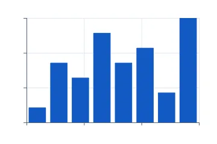
Bar / column
The default for comparing one number across categories. Bars must start at zero, because their length is the message. With many categories or long names, turn it sideways.
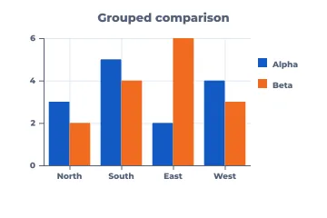
Grouped bar
Two or three series side by side per category, when the comparison inside each group matters most (this year against last, plan against actual). Past four series it turns into a picket fence; switch to small multiples.
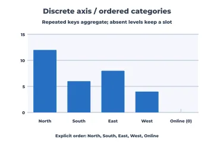
Bars on an ordered category axis
Categories with a meaningful order of their own (sizes, stages, survey answers), including levels with no data, which keep an empty slot instead of silently disappearing.
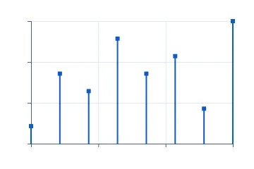
Lollipop
A bar chart with less ink: same use, better when there are many categories or the values are close together and thick bars would dominate the page.
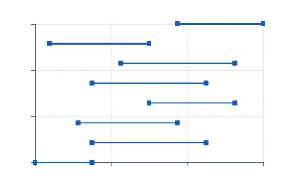
Dumbbell
Two values per category, such as before and after or men and women, where the gap is the story. Easier to read than paired bars when there are many rows.
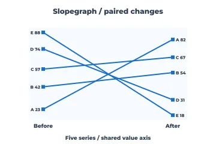
Slopegraph
The same items at exactly two moments. Crossing lines show who overtook whom; the rank change is the point, not the path between the two moments.
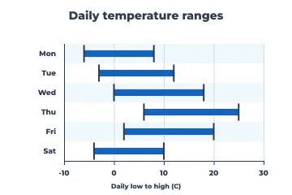
Range / interval bars
A low and a high per category, such as daily temperature ranges, price bands or shift windows, when the span matters more than any single value.
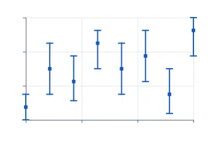
Error bars
Point estimates with their uncertainty. Always say what the whiskers mean (standard deviation, standard error or a confidence interval), because readers will guess otherwise.
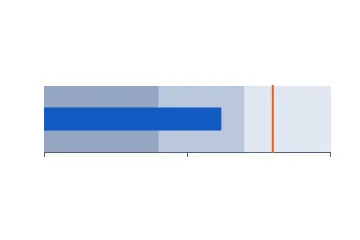
Bullet graph
One measure against a target and qualitative bands (poor, fair, good) in a small strip. It does a dashboard gauge's job in a tenth of the space.
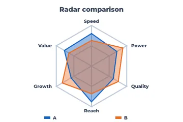
Radar
Comparing a few profiles across five to eight dimensions measured on the same scale, such as product scorecards. Shape is easy to see; exact values are not, so keep a table nearby.
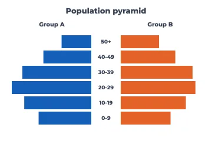
Population pyramid
Two mirrored distributions over the same ordered bands, classically age by sex. It works for any two-group comparison over ordered bins.
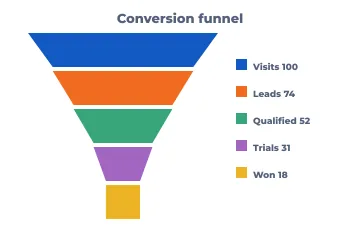
Funnel
Counts that shrink through ordered stages (visits, leads, trials, wins). Label each stage with its value or conversion rate, because tapering widths are hard to compare.
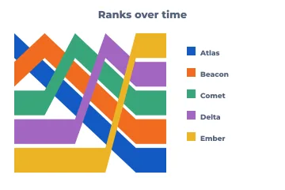
Rank over time (ribbons)
Who led, and when: the position of each competitor across periods. Use it when rank matters more than the gaps between competitors.
Parts of a whole
Shares only make sense when the parts add up to a meaningful total. For two to five parts a bar, pie or waffle all work; for many parts or a hierarchy, use the area-based layouts. When the parts change over time, stacked bars or a streamgraph beat a row of pies.
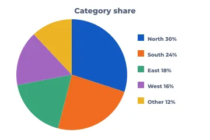
Pie
A few shares of one total, when "about a quarter" is precise enough. Five slices at most, the largest first, and labels on the slices instead of a legend.
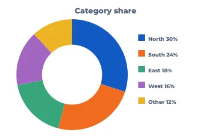
Donut
A pie with room in the middle for the total or a headline number. Same limits as a pie.
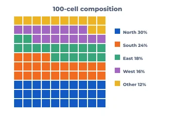
Waffle
Shares as countable squares out of 100. Friendlier than a pie for general readers, and small shares stay visible.
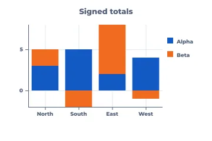
Stacked bar (signed)
Totals per category and their make-up at once. Only the bottom segment shares a baseline, so compare inner segments with care. Negative parts stack below zero.
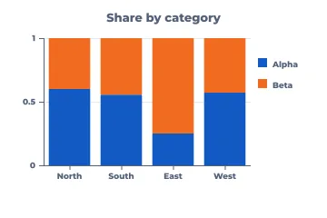
100% stacked bar
Composition across categories when the totals differ or don't matter: market share by region, answer mix by group.
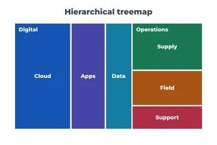
Treemap
Large hierarchies of sizes (budgets, disk usage, portfolio weights), where nested rectangles fit hundreds of items on a page. Colour can carry a second measure.
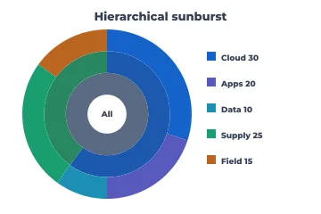
Sunburst
A hierarchy shown as rings. It reads well for a few levels when the path from the root matters more than precise area comparison.
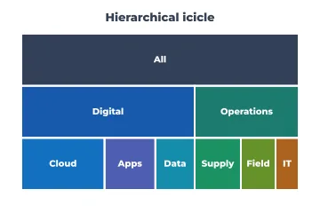
Icicle
The rectangular cousin of the sunburst. Depth runs top to bottom and the labels fit better, so it is often the more practical of the two.
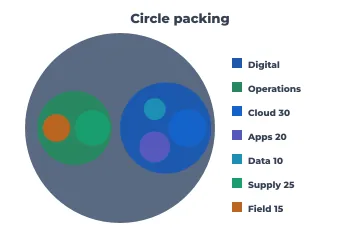
Circle packing
Hierarchy and grouping at a glance, for organisation charts with sizes or clusters of clusters. It wastes space by design, so don't use it for exact comparison.
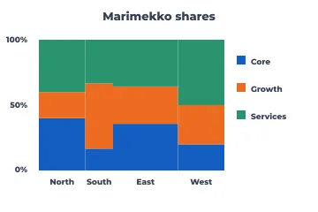
Marimekko
Two-dimensional shares: column width is each segment's size and the stacks show its mix, as in market size by region and share by vendor within each.
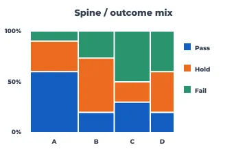
Spine plot
Outcome mix across groups of different sizes, from counts. Each bar's width is its group's size and its stack is the outcome proportions.
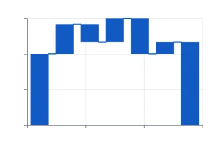
Waterfall / bridge
How a starting value becomes an ending value through positive and negative steps: profit bridges, budget variances, headcount changes.
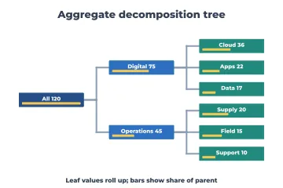
Decomposition tree
Drilling a total into its contributors level by level, with each node's share. Good for "where does this number come from?"
Change over time
Time goes left to right. A line says the points in between are meaningful; bars or dots say they are separate periods. Real calendars have uneven months and leap years, so use a date axis rather than evenly spaced labels.
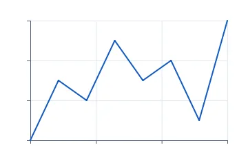
Line
The default for a continuous series. Several series fit on one chart until they tangle (four or five); after that, use small multiples.
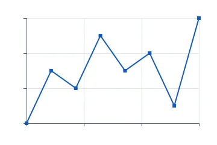
Points and line
A line where each observation should stay visible: sparse or irregular measurements, or when individual readings matter.
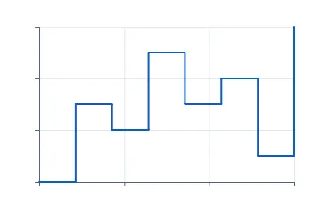
Step
Values that hold until they change: prices, inventory, interest rates, configuration states. A sloped line would wrongly suggest a gradual change.
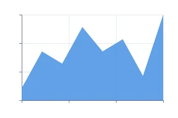
Area
A single series whose volume matters, such as cumulative totals or load over time. Area from zero; don't stack more than a few.
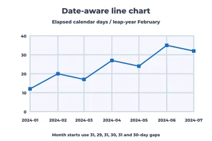
Date-aware line
Real calendar time: months of different lengths, leap days, irregular sampling. Points sit at their true elapsed time and month starts are labelled.
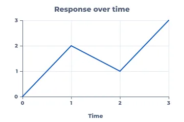
Labeled line
A line with titled axes and tick labels, the standard published look. Use direct labels at the line ends instead of a legend whenever you can.
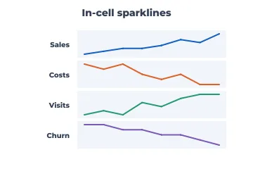
Sparklines
Word-sized trends in a table or dashboard row: shape and direction, not values. Put the current number next to it.
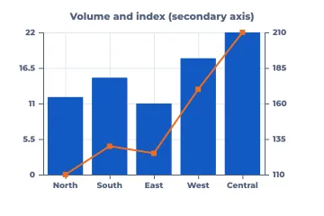
Bar + line (secondary axis)
Two measures with different units, such as revenue bars and an index line. Label both axes clearly; dual axes invite false correlations, so use them sparingly.
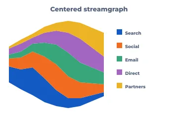
Streamgraph
Many categories' volumes flowing over time around a centre line. Striking for broad shifts in share; poor for reading exact values.
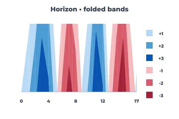
Horizon chart
Many time series stacked in very little height. Bands are folded and shaded by magnitude, which suits monitoring dozens of servers or sensors at once.
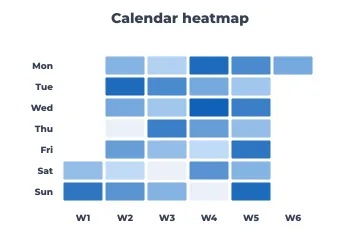
Calendar heatmap
Daily values on a week-by-weekday grid: activity, sales or incidents, when weekly rhythm and individual days both matter.
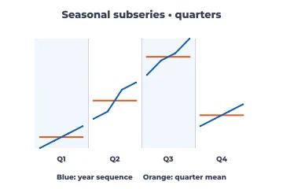
Seasonal subseries
Is every January like every other January? Each season's values over the years, with its mean, to separate seasonality from trend.
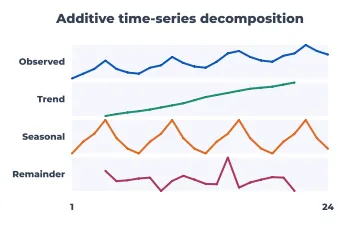
Time-series decomposition
A series split into trend, seasonal and remainder panels, to see what is structure and what is noise before forecasting.
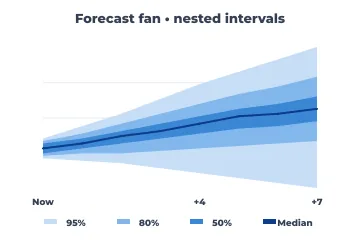
Forecast fan
A forecast with nested prediction intervals (50/80/95%) that widen with the horizon. It is honest about uncertainty in a way a single line never is.
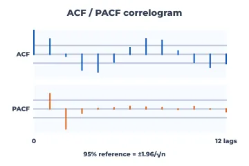
ACF / PACF correlogram
Autocorrelation by lag with significance bounds: choosing ARIMA orders, checking residuals for leftover structure, finding seasonality.
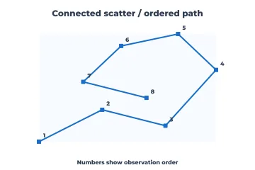
Connected scatter
Two measures that move together over time (unemployment and inflation, price and volume), with the path drawn in time order.
Distributions
Before any summary statistic, look at the shape: one peak or two, skew, outliers, gaps. Histograms and densities show shape, box plots summarise it compactly for many groups, and Q-Q and probability plots check it against a model. With small samples, show every point.
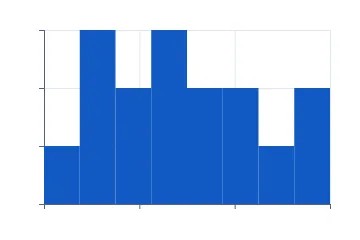
Histogram
The shape of one numeric variable. Try a few bin widths; the story should survive them. Bars touch because the bins are contiguous.
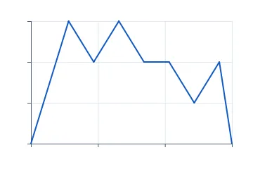
Frequency polygon
A histogram drawn as a line, which makes it easy to overlay two or three distributions on one axis.
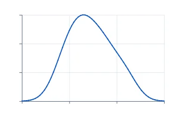
Density (KDE)
A smoothed distribution shape. Good for overlays and for comparing modes; state the bandwidth, because it changes the picture.
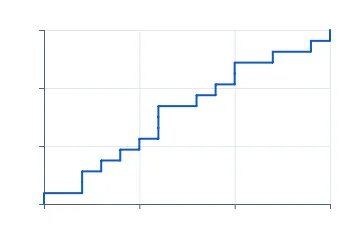
ECDF
Every observation as a cumulative step: medians, percentiles and comparisons between groups with no binning choices at all. Underused and excellent.
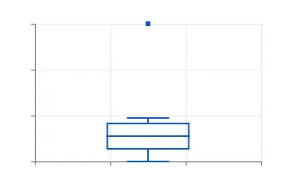
Box plot
Median, quartiles and outliers for many groups side by side. Compact, but it hides bimodality, so pair it with points or a violin when n is small.
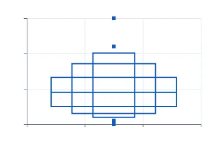
Letter-value (boxen) plot
A box plot for large samples: more quantiles in nested boxes show the tails that a plain box reduces to a swarm of outliers.
Violin
A mirrored density per group: shape and spread together. Better than a box plot when distributions can have two peaks.
Half violin
One side of a violin, leaving room for points or a box on the other side.
Raincloud
Density, box summary and every raw observation together. The most complete small-sample distribution picture.
Ridgeline
Distributions of many groups or periods stacked with slight overlap, such as monthly temperatures or response times by release.
Beeswarm
Every point of a modest sample, nudged so none overlap. Shows both the distribution and the individual cases.
Strip (jitter)
Raw points per group with random jitter. A quick honest look at small samples; use a beeswarm when overlap gets heavy.
Rug
Tick marks of the raw values along an axis, usually under a density or a scatter, to show where the data really are.
Binned dot plot
Stacked dots per bin: a histogram where each observation can still be counted, ideal for teaching and small samples.
Stem-and-leaf
A text histogram that keeps the digits of every value, for small datasets and printed reports.
Normal Q-Q plot
Do the data follow a normal distribution? Points on the line mean yes; curved ends mean heavy or light tails. Standard for checking model residuals.
P-P plot
Compares cumulative probabilities instead of quantiles. More sensitive in the middle of the distribution and less in the tails than a Q-Q plot.
Normal probability plot
Observed values against a probability-scaled axis, the engineering form of the Q-Q plot, read directly as percent below a value.
Weibull probability plot
Reliability data on Weibull paper, censored units included, against a reference Weibull line: straight means Weibull, and the slope tells infant mortality from wear-out.
Scatter with marginal histograms
A joint relationship plus each variable's own distribution on the edges, so skew or clusters in either axis are not missed.
Monte Carlo histogram
Simulated outcomes of a model with a decision threshold marked: the spread of what could happen, not just the average.
Monte Carlo CDF
The same simulation read cumulatively: "the chance the outcome is at most 70" comes straight off the curve.
Relationships between variables
Scatter plots are the workhorse; everything here either adds a model to the scatter, copes with too many points, or extends the idea to more than two variables. Choose log or symmetric-log axes when values span orders of magnitude.
Scatter
Two numeric variables per observation: correlation, clusters, outliers. The first chart to draw for any pair of measurements.
Bubble
A scatter with a third measure as circle area (never radius). Keep the bubbles few and labelled.
Log-scale scatter
Values spanning orders of magnitude, such as income, population or response times, where multiplicative change is what matters.
Labeled log scatter
The same with readable decade ticks (1, 10, 100, 1000), so readers never have to decode exponents.
Symmetric-log line
Data that cross zero and also span magnitudes, such as profit and loss or signed growth. It is linear near zero and logarithmic beyond.
Labeled symmetric-log line
Symmetric-log with labelled ticks on both sides of zero.
Regression fit
A scatter with its least-squares line: direction and strength of a linear trend. Always look at the residuals before trusting it.
Mean confidence band
Where the true regression line probably lies. Narrow in the middle of the data, wider at the ends.
Interval band
Any lower-and-upper envelope over x: tolerance bands, ranges or min-max over time.
Prediction band
Where a new observation will probably fall. Much wider than the confidence band, and the right band for setting expectations.
Data (covariance) ellipse
The shape of a bivariate cloud: orientation, spread and correlation in one outline. Good for comparing groups without plotting every point.
Hexbin
Tens of thousands of points or more. Counts per hexagon replace an unreadable black blob.
2-D bins
The rectangular version of hexbin; it lines up with gridded data and integer axes.
2-D density contours
A smoothed joint density as contour lines. It shows clusters and modes without per-point clutter.
Contour lines
Lines of equal value over a 2-D field, as on a topographic map: response surfaces, potentials, model outputs over two inputs.
Filled contours
Contour bands filled by level, easier to read at a glance than lines alone.
Heatmap
A matrix of values coloured by magnitude: hour by weekday, gene by sample, feature by model. Order the rows and columns meaningfully.
Correlation matrix
Pairwise Pearson correlations of many variables with a diverging colour scale. The first look at a new dataset.
Scatterplot matrix
Every pairwise scatter of a few variables at once (up to about six), for exploring before modelling.
Parallel coordinates
Many variables per item as polylines across parallel axes: trade-offs and clusters in multi-criteria data.
Ternary plot
Three parts that sum to a constant, such as soil texture, alloy composition or three-party vote shares, placed inside a triangle.
Scatter with missing data
Explicitly omits incomplete pairs while keeping the original row identities, so missingness is reported and never silently dropped.
Categories, tables and sets
When both variables are categories, the question is usually "is there an association?" These charts show counts, proportions and where observed counts depart from independence. The report layouts carry numbers where readers want exact values.
Mosaic plot
A two-way table as nested rectangles, coloured by Pearson residuals so over- and under-represented cells stand out.
Association plot
Residuals from independence as bars above or below a baseline per cell: the departure itself, with nothing else.
Fourfold display
A 2×2 table (treatment against outcome) with an odds-ratio confidence ring: does the association hold?
Cross-tab report
A table of counts with row, column and grand totals, for when readers need the exact numbers.
Matrix report
Grouped rows by period with subtotals, missing cells kept distinct from zeros, and in-cell bars: the paginated-report layout.
In-cell data bars
A small bar inside each table cell, the spreadsheet trick that makes a column of numbers scannable.
Faceted heatmap
The same matrix for several groups side by side on one colour scale.
Euler diagram (area-proportional)
Two overlapping sets with circle and overlap areas proportional to the counts.
Venn diagram (three sets)
All the intersections of three sets, labelled. Logical rather than proportional: use it to explain membership, not to compare sizes.
Word cloud
A quick, informal impression of which terms dominate. Not for comparison (word length distorts size); use a sorted bar chart for that.
Classifiers and predictive models
A single accuracy number hides almost everything. These curves show how a model behaves across thresholds, whether its probabilities can be trusted, and whether using it beats simple strategies.
ROC curve
True-positive rate against false-positive rate across thresholds. AUC summarises how well the model ranks cases, independent of prevalence.
Precision-recall curve
The better choice when positives are rare, as in fraud or disease screening, where ROC curves look optimistic.
Cumulative gain
"Contacting the top 20% finds 60% of the buyers": a model's value for targeting a budgeted share of the population.
Cumulative lift
Gain divided by the random baseline: how many times better than chance at each depth.
Calibration (reliability)
Do predicted probabilities match observed frequencies? Essential when the probabilities themselves drive decisions.
Confusion matrix
Counts of predicted against actual classes at one threshold: which errors the model makes, not just how many.
Partial AUC
The area under the ROC curve over only the false-positive range you can tolerate, as in screening where FPR must stay low.
Youden index
The threshold that maximises sensitivity plus specificity minus one, marked on the ROC curve. A common default cut-off.
Decision curve
Net benefit across threshold probabilities against "treat all" and "treat none": is using the model clinically worth it?
Regression diagnostics
Fit a model, then try to break it. These four charts find curvature, unequal variance and the few observations that drive the result.
Residuals vs fitted
Patterns here mean the model misses structure. A funnel means unequal variance; a curve means a missing term.
Leverage vs residual
Points that are unusual in x (high leverage) and also poorly fitted (large residual) are the dangerous ones.
Cook's distance
Each observation's influence on the whole fit, as one number per row. Inspect the spikes.
Influence plot
Leverage, residual and Cook's distance (as bubble area) in one view: which points would change the conclusion.
Medicine, survival and agreement
Charts from clinical and reliability practice, where censoring, effect sizes and agreement between methods matter more than raw values.
Kaplan-Meier survival
The probability of surviving (or not failing) past each time, with censored subjects handled correctly. Trials, churn, component life.
Nelson-Aalen cumulative hazard
Accumulated risk over time; its slope shows whether the hazard rises or falls, which survival curves hide.
Interval hazard
Events per person-time in each interval: when risk is highest, using exposure rather than head counts.
Forest plot
Effect estimates and confidence intervals from several studies or subgroups against a no-effect line, the face of every meta-analysis.
Bland-Altman
Do two measurement methods agree? Differences against means, with the bias and limits of agreement. Correlation is the wrong tool for this question.
Dose response
Observed responses against log dose beside a four-parameter logistic (LL.4) curve whose parameters you supply: potency (EC50), slope and the plateaus.
Statistical process control
Control charts separate routine variation from signals. Pick by data type and subgroup:
| Your data | Chart |
|---|---|
| Individual measurements | I and MR charts |
| Subgroups of 2–9 | X-bar and R |
| Subgroups of 10 or more | X-bar and S |
| Defectives, varying sample size | p (Laney p′ if huge samples) |
| Defectives, constant sample size | np |
| Defects, constant area | c |
| Defects, varying area | u (Laney u′ if huge samples) |
| Rare events | G or T |
| Small sustained shifts | CUSUM or EWMA |
| Several correlated variables | Hotelling T², MEWMA, generalized variance |
| A known change in the process | the phased versions |
Every chart in this family reports which points break its limits; the phased versions recompute the limits after a known change, so the process before the change does not mask the process after it.
Individuals (I) chart
One measurement at a time (batch assays, monthly figures) with limits from the moving range.
Moving range (MR) chart
The companion of the I chart, tracking short-term variation between consecutive points.
X-bar chart
The mean of small rational subgroups (typically 4–5 parts per sample): sensitive to shifts in the process average.
Range (R) chart
Within-subgroup spread for small subgroups, read together with X-bar.
X-bar / S chart
Means monitored with standard-deviation-based limits, for larger subgroups (about ten or more).
S chart
Subgroup standard deviations, the spread companion for larger subgroups.
p chart
The proportion defective when sample sizes vary. Limits widen for small samples.
np chart
The number defective with a constant sample size: easier for operators to read than proportions.
c chart
Defect counts per unit when the inspection area is constant (scratches per panel, errors per form).
u chart
Defects per unit when the area of opportunity varies.
Laney p′ chart
A p chart corrected for overdispersion. Use it with very large samples, where ordinary p limits are so narrow that everything alarms.
Laney u′ chart
The same correction for rates.
G chart
Opportunities between rare events (cases between infections, units between failures), where p charts break down.
T chart
Time between rare events, modelled as exponential.
CUSUM (upper)
Cumulative sums that catch small sustained upward shifts that Shewhart charts miss.
CUSUM (lower)
The downward side of a two-sided CUSUM.
EWMA chart
An exponentially weighted moving average, also tuned for small shifts, and robust to non-normal data.
Run rules (Western Electric / Nelson)
Flags the eight run-test patterns (trends, runs on one side, alternation) even inside the limits.
Hotelling T²
Several correlated measurements monitored as one. It catches combinations that look normal one variable at a time.
Generalized variance
Multivariate spread: the determinant of each subgroup's covariance matrix, against a pooled reference.
MEWMA
The multivariate EWMA, for small drifts in correlated processes.
ANOM
Analysis of means: which groups differ from the grand mean, shown in control-chart form for audiences who don't read ANOVA tables.
Phased I chart
Separate limits before and after a known change (a new machine or a new supplier), so the old data don't hide the new process.
Phased X-bar / R
Subgroup means and ranges with limits recomputed per phase.
Phased X-bar / S
The same pair for larger subgroups.
Phased R chart
The range chart on its own, per phase.
Phased S chart
The standard-deviation chart per phase.
Phased p chart
Proportion defective with limits per phase.
Phased np chart
Number defective per phase.
Phased c chart
Defect counts per phase.
Phased u chart
Defect rates per phase.
Phased Laney p′
The overdispersion-corrected p chart, per phase.
Phased Laney u′
The overdispersion-corrected u chart, per phase.
Capability and measurement systems
Two questions come before any capability claim: is the process stable (see control charts), and can you measure it? These answer the questions that come after.
Normal capability
Histogram against specification limits with Cp, Cpk, Pp and Ppk and expected defects per million, assuming normal data.
Non-normal capability
The same for skewed data via a lognormal fit, because normal-theory Cpk misleads badly for skewed processes.
Attribute (binomial) capability
Capability from pass/fail data: the defective rate per sample, its pooled value with Wilson confidence bounds, and PPM against a target.
Batch capability
Separates within-batch from between-batch variation, for processes made in lots.
Capability sixpack
Control charts, recent values, histogram, normality plot and capability indices on one page: the full Six Sigma report.
Gage R&R
How much of the observed variation comes from the measurement system (repeatability, reproducibility) rather than the parts.
Gage run chart
Every reading by part and operator, to see measurement consistency before computing any variance components.
Gage bias and linearity
Is the gauge accurate across its range, or does its bias change with the size of the part?
Attribute agreement
Do inspectors agree with each other and with the standard on pass/fail calls (kappa, percent agreement)?
Operating-characteristic curve
The probability that an acceptance-sampling plan accepts a lot, by incoming defect rate: what protection the plan really gives.
Process improvement and experiments
The diagrams of Lean and Six Sigma, plus the plots that read designed experiments.
Pareto
Causes sorted by frequency with a cumulative-percent line: the vital few worth fixing first.
Fishbone (Ishikawa)
Brainstormed causes grouped under the six Ms around one effect, the classic root-cause workshop artifact.
Cause-effect tree
The same thinking as a tree with deeper sub-causes, when the fishbone runs out of room.
Multi-vari
Variation broken down by nested factors (machine, then setting, then readings): where the variation lives.
Main effects
The mean response at each level of each factor in a designed experiment: which knobs matter.
Interaction plot
Non-parallel lines mean the effect of one factor depends on another. Check this before trusting main effects.
Cube plot
Mean responses at the corners of a 2³ design, to see a three-factor experiment at once.
SIPOC
Suppliers, inputs, process, outputs and customers on one page, to scope an improvement project.
Value-stream map
Process steps with processing time against queue time and lead time: where the waiting is.
Future-state value stream
Current and target flows on comparable lead-time ladders, with pull and FIFO cues and takt-time violations.
Branching process map
Flow with probabilistic routes and rework loops, with yields along each branch.
Projects and operations
Charts for running work: schedules, progress, capacity, risk and state.
Gantt
Tasks on a time axis with progress, the default project schedule.
Milestone roadmap
Key dates by workstream without task-level detail, for leadership and customers.
Burndown
Work remaining against the ideal line within a sprint: will we finish?
Burnup
Work done against total scope. Unlike a burndown, it shows scope creep.
Earned value
Planned value, earned value and actual cost together: schedule and cost variance in one chart.
Resource histogram
Allocated capacity over time with the over-allocation above the cap highlighted.
Risk matrix
Likelihood against impact with counts per cell, to prioritise mitigation.
Kanban board
Work items by state with WIP limits: flow and bottlenecks at a glance.
Swimlane
A process across roles or teams, making the hand-offs visible.
PERT / CPM network
Task dependencies with durations and the critical path: which delays move the end date.
Event timeline
Discrete events on tracks over time: releases, incidents, milestones.
State timeline
Which state each entity was in over time (running, idle, paused), as abutting bands.
Status history
Health states per service over time, as on status pages and in SLO reviews.
Cohort retention
A triangle of retention by sign-up cohort and age: is the product getting stickier?
Gauge
One value against a target on a dial. Use it sparingly: a bullet graph says the same in less space.
KPI card
A headline number, its status against target and a slim progress bar.
Finance
Market and corporate-finance staples. All of them work from data the caller supplies; none of them fetch market data or fit financial models.
Candlestick
Open, high, low and close per period, coloured by direction: price action for traders.
OHLC bars
The same four prices as ticks. Lighter than candles in dense charts.
Price and volume
A price line over volume bars on a shared time axis: did the move happen on volume?
Returns and rolling volatility
Period returns over a rolling standard deviation: risk regimes over time.
Drawdown
The fall from the running peak: the pain an investor actually experienced, and how long recovery took.
Yield curve
Yield by maturity, comparing dates or scenarios: inversion, steepening, level shifts.
Cap-table waterfall
Ownership before and after an option-pool top-up and a funding round: dilution, holder by holder.
Tornado
One-at-a-time sensitivity: which input assumptions move the output most, sorted by swing.
Valuation football field
Value ranges from different methods (comparables, precedents, DCF) on one per-share scale.
Flows, networks and diagrams
When the data are connections rather than numbers. Flow diagrams carry quantities; the rest show structure.
Sankey
Quantities flowing between stages, with band width proportional to flow: energy, budgets, user journeys.
Alluvial
How the same items regroup across categorical stages (cohorts moving between segments).
Chord
Flows between members of one group, such as migration between regions or trade between teams. Best with few members.
Org chart
Reporting lines as a tree.
Dependency graph
A DAG of build steps or packages: what must happen first, where paths merge and split.
Flowchart
A procedure with decisions and loops, the universal process diagram.
Decision tree
Choices and chance nodes with probabilities and expected values: which option to take.
State machine
States and the events that move between them, including initial, final and self-loops.
Sequence diagram
Messages between components over time, including asynchronous returns: protocols and APIs.
Entity-relationship
Tables, keys and cardinalities: a database schema at a glance.
Signals, fields and dynamics
Engineering and science views where frequency, direction or state space is the axis.
Spectrogram
Frequency content over time (from a short-time Fourier transform): speech, vibration, radio.
Waterfall spectrum
Successive spectra offset in perspective, to watch a peak drift or grow.
Bode plot
Magnitude and phase of a system's frequency response on a log-frequency axis: filters and control loops.
Nyquist plot
A frequency response in the complex plane, read against the critical point for stability margins.
Quiver (vector field)
Arrows for direction and magnitude on a grid: wind, flow, gradients.
Streamlines
Paths through a vector field, which show the flow structure more clearly than arrows.
Phase portrait
A system's state against its lagged state: cycles, attractors, chaos.
Recurrence plot
When a series returns close to an earlier state. It reveals periodicity and regime changes.
Empirical variogram
Semivariance by distance: spatial correlation range, the first step of kriging.
Wind rose
Frequencies by direction sector with area-scaled petals: wind, orientations, headings.
Maps
Geography on caller-supplied boundaries, projected without a map service.
Choropleth
A rate per region by colour. Always map rates, not raw counts, or the map just shows where people live. Missing regions stay visibly grey.
Proportional-symbol map
Counts or volumes as circles at locations, with area-scaled sizes and a size legend. The right map for totals.
3-D
Perspective costs accuracy: bars and points at different depths can't be compared exactly. Use 3-D when the third dimension is the point (a surface or a helix) and prefer contours or small multiples for reading values.
3-D scatter
Points with three coordinates under an explicit camera, depth-sorted. For shape: helices, clusters, trajectories.
3-D histogram
Joint counts of two variables as prisms. A 2-D bin heatmap is usually easier to read.
3-D density surface
A joint density as a shaded surface, to show peaks and ridges.
3-D wireframe
A function of two variables as row and column traces, lighter than a filled surface.
Composition, layout and accessibility
These previews show the engine rather than a chart type: the pieces that make the charts above publishable.
Facets with shared or free scales
Small multiples where you choose whether panels share axes (for comparison) or not (for shape).
Category facets
One panel per category level, empty levels included, with strip labels.
Shared guides
Tick labels only on the outer edges of a facet grid, so panels stay large.
Plot grid
Independent charts of different kinds arranged in weighted cells, the way a dashboard is.
Wrapped legend
Legend items that wrap inside a fixed band without colliding.
Collision-free point labels
Labels placed around their points by priority, never overprinting; those that don't fit are reported, not hidden in the clutter.
Clipped annotation
Marks and notes clipped to the plot area while titles stay outside.
Interactive selection
Hit-testing that maps a pointer to the source row, and SVG points that are keyboard-focusable.
Locale-aware axes
Ticks in the reader's number and date conventions (decimal and grouping separators, month names).
Accessible palette
Six series colours that each reach 4.5:1 contrast against the background.
Colour-vision check
The palette as seen with protanopia, deuteranopia and tritanopia, with the closest pair's CIEDE2000 difference.
Gradients and embedded fonts
Gradient fills shared by the PNG and the SVG, with the font embedded in the SVG.
Chart in an e.ui canvas
A chart hosted by the UI toolkit, laid out at whatever size the window gives it.
PDF export
The same layout as a vector PDF page for reports and print, beside the PNG and SVG; text is the built-in Helvetica, so nothing is embedded.
What is not there yet
The gallery is complete against its plan, but the library is not finished. Still open:
- a faster PNG encoder: drawing a chart takes 2 ms, deflate takes the other 18 (see the benchmark);
- embedded fonts and compression in PDF output;
- font subsetting for embedded SVG fonts (the whole font is embedded now);
- leader lines for labels that do not fit, and pointer events on charts in the UI;
- comparisons with ggplot2, base R graphics and lattice, which need an R installation we did not have.
The charts above that do statistics (capability, Weibull, dose response, the control-chart limits) compute what their captions say and no more. Where a parameter is supplied rather than estimated, the preview says so in its footer. A chart is a view of an analysis, not a substitute for one.